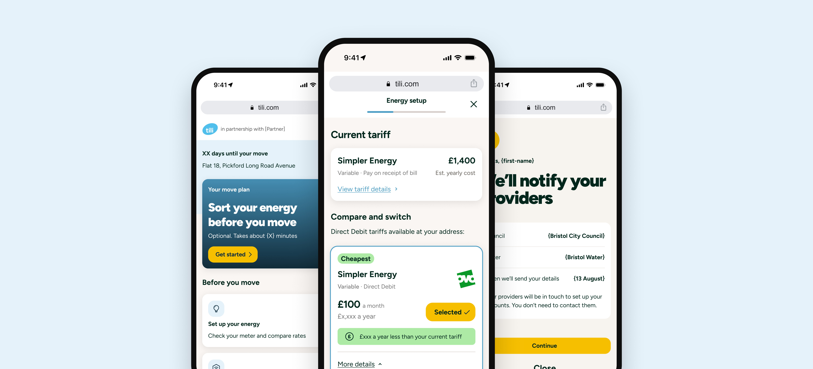

Overview
Tili is OVO's property partnerships tool. It helps customers set up their bills in a new home in time for their move-in date, taking the stress out of getting energy, council tax, water and entertainment sorted. It is also a valuable acquisition channel for OVO.
I was the senior product designer on the Tili redesign MVP, which is now live in production. The work focused on the top of the funnel: the SMS, email and landing pages that introduce Tili and ask customers to get started.

The challenge
Tili converts well for customers who enter the journey. The problem was getting them in. Analysis showed that 36% of customers who receive communications from the platform never engage.
That gap was the opportunity. Widening the funnel would bring more customers into the journey, and more of them would confirm OVO as their incumbent energy supplier.
Design process
The data pointed at the first few moments of the journey. Customers were receiving a text or email that looked spammy. They didn't trust it, so they weren't likely to tap or click through. So I focused on the key touchpoints at the top of the funnel and made each one answer those three questions:
- What is Tili?
- Why have I been contacted?
- What do I need to do to complete my home set up?
Clearer answers help build trust in the product, which is what gets a customer to take the first step.
We rolled out a set of updates within an A/B test so we could measure their effect:
- Updated referred landing page
- Updated email comms
- Updated SMS comms
Outside the A/B test, we also delivered an updated non-referred landing page and a URL shortening service. The shortening service reduces the length of the SMS messages we send, cutting SMS costs by up to 3x.


Impact
The Tili redesign MVP is live in production, with the referred landing page, email and SMS updates running as an A/B test.
- Up to 3x lower SMS costs, from the URL shortening service
- Updated non-referred landing page live outside the A/B test
- Target: widen the funnel for the 36% of customers who receive comms but never engage
Key takeaways
This project reinforced that a strong journey can still underperform if customers never reach it. The biggest opportunity sat in the first message a customer sees, so clearly explaining what the product is, why they've been contacted and what to do next mattered as much as the journey itself.